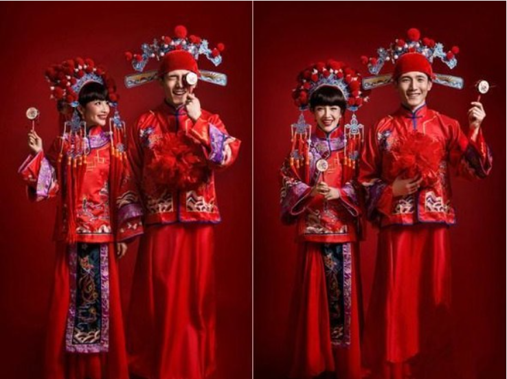
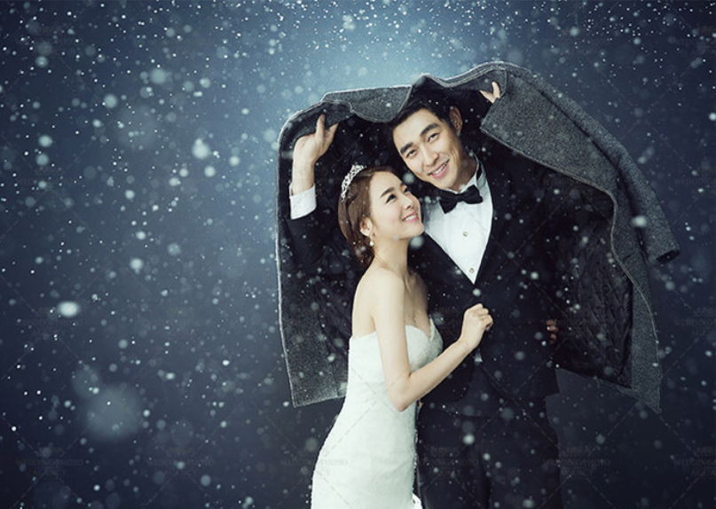
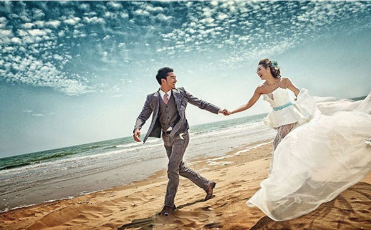

返回首页
我们兰黛的拍摄风格有以下几种：
- 一、传统中国风："中式风格"当然是我们的首选，别看现在的年轻人越来越另类，但他们骨子里其实是很传统很有中国情结的，"中式风格"的婚纱照正在悄然盛行。一袭红妆再加上凤冠霞帔，勾勒出浓浓的中国式新娘气息，显得喜庆而又别具韵味。
- 
- 二、简约时尚风：让新人能更好地展现自我个性的一面，将最完美的一刻定格。这种简单素雅而又不失精致的时尚装扮，使新娘、新郎的神态和动作都很突出，比较能突显容貌和气质。
- 
- 三、叙事情节风：一个故事，一张张个性婚纱照，呈现出新人恋爱的故事，有苦有甜。
- 